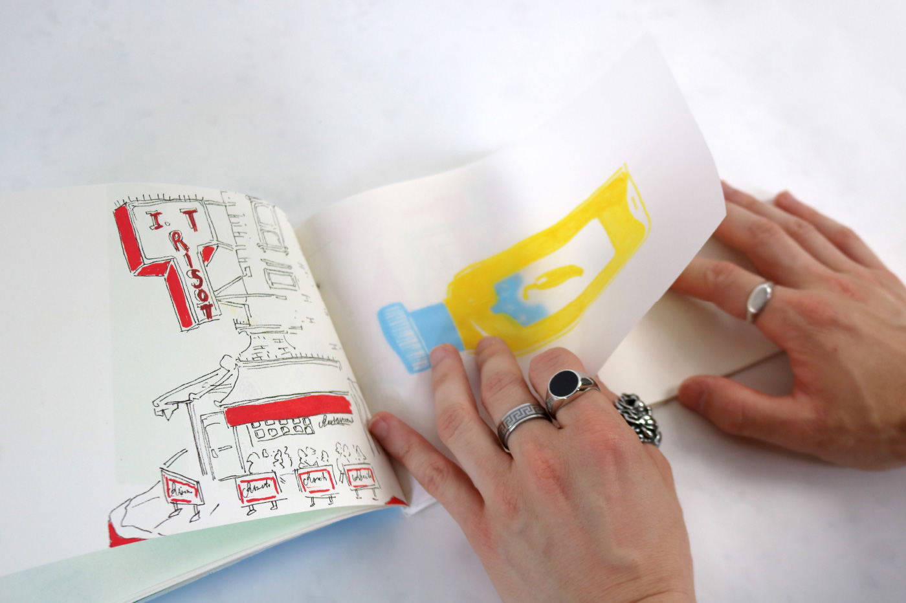
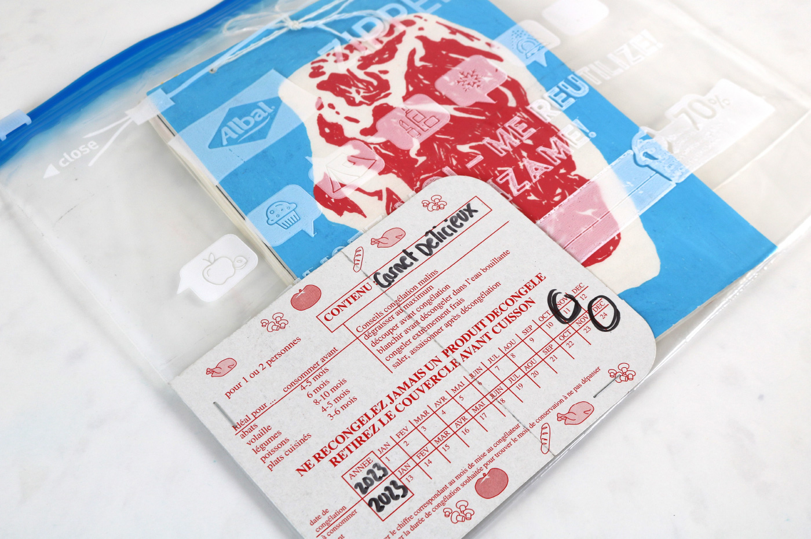
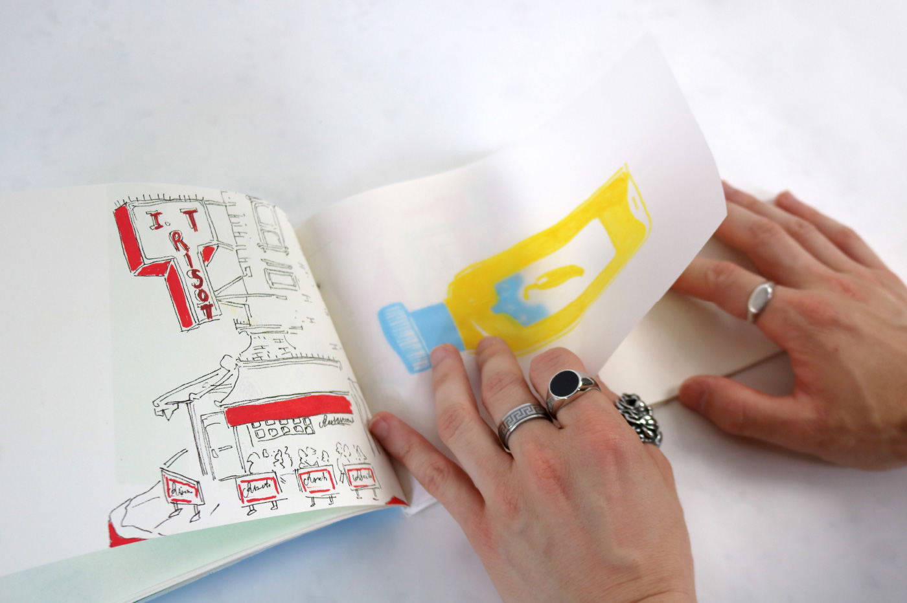
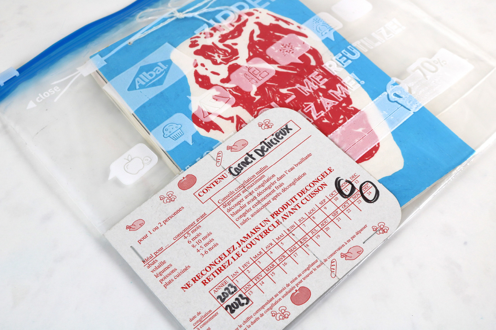

This experimental sketchbook of drawings and illustrations is centered around the theme of cooking, food, and utensils. Conceptualized after a period of observation, it is inspired by the act of handling and the culinary gesture.
I designed this sketchbook as a narrative and playful object, where every detail reflects the world of cooking. Its presentation breaks conventional formats, inviting the reader into a visual and tactile experience. Each page explores the theme of cooking through various compositions and techniques, offering a sensitive approach.
 


